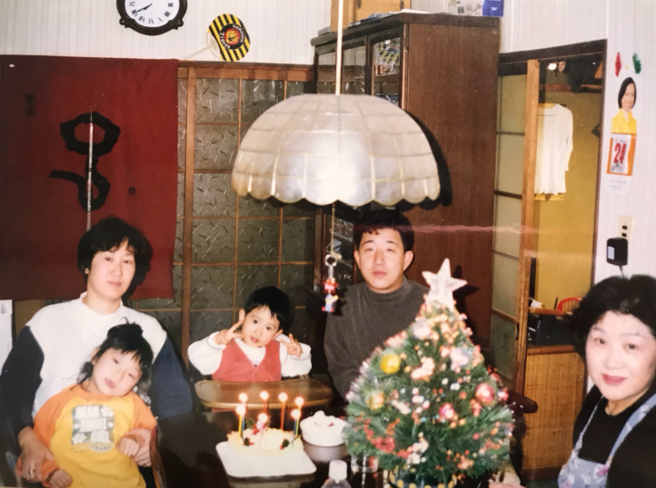
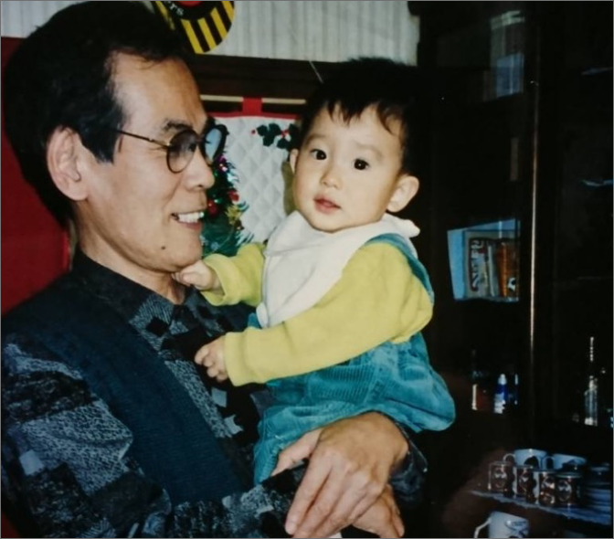
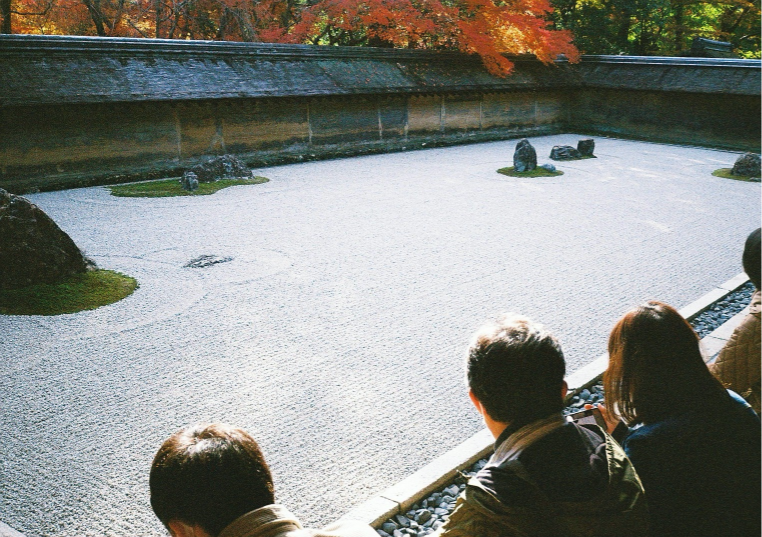

1999年 福井県で生まれる。 自然豊かなところで育ったのと、釣り好きな祖父の 影響で将来は漁師になることを夢みた。 3人兄弟の真ん中で、長男。
小学生で始めた野球に夢中になり、高校卒業まで続けた。 高2の4月に映画「ビリギャル」を見て、一念発起し 早稲田大学を目指す。平均10時間以上の勉強をして 第二志望の法政大学に合格。努力が実を結ぶ経験をした。

大学2年の冬に祖父が急逝。 彼の好きだった地元を自分がまた盛り上げるのだと意思を固めた。 あれこれ行動しているうちにデザインと出会った。 まだデザインのデの字も分からなかったけど 面白いし、夢にも近づけるような気がして夢中になった。

ブランディングデザインというのが一番最初に惹かれた。 デザインの魅力は、ヒトやモノが本来持つ美しさや魅力を引き出す ことができることだと思う。ドラマ「リッチマン・プアウーマン」を見て グラフィックに加えて、Web制作まで出来れば さらにできることが増えて夢に近づけるのではないかと考え現在奮闘中。